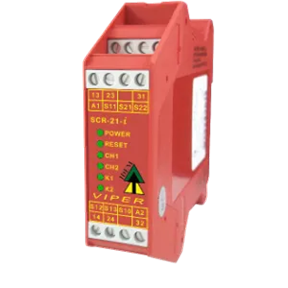

IDEM Safety Relay Troubleshooting Guide
In the CXLS interlocks system, we use two modules of IDEM safety relays, SCR-21-i and SCR-31-i.
The face of the IDEM relays have 6 diagnostics LEDs:
POWER: Power to the safety relay.
RESET: Reset loop S11-S21 or S11-S22 is closed (see manual).
CH1: Channel 1 control loop S11-S21 is closed.
CH2: Channel 2 control loop S13-S10 is closed.
K1: Power to internal relay K1.
K2: Power to internal relay K2.
During normal operations all 6 of these lights should be on if the relay is supposed to be receiving power. If any of the LEDs are not on, there is an error occurring.
IDEM_safety_relay_manual.pdfResolved Issues
A relay was not properly actuating when receiving power, and would show either the K1 or K2 off. It was discovered that the relay was receiving too voltage to function properly due to voltage drops from Apantec breakout boards. The operating voltage for these units is 24VDC, with a tolerance of 20.4-26.4VDC.